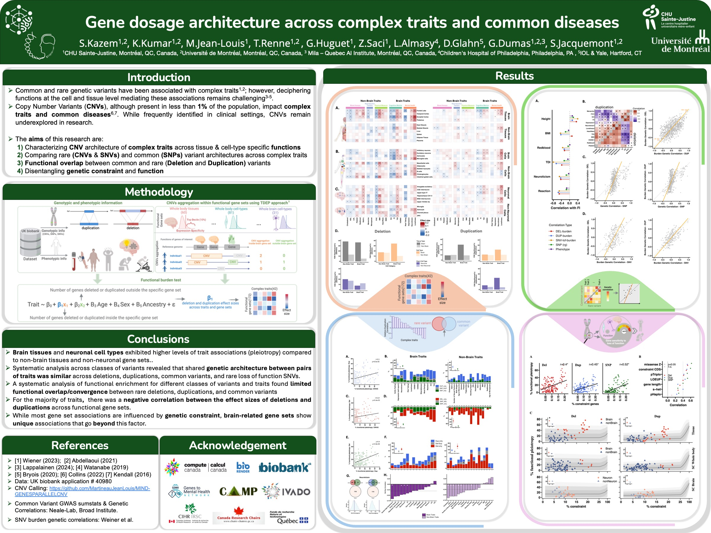

About Me
Hello! I'm Kuldeep Kumar.
I am in the job market, looking for tenure-track assistant professor positions.
My vision centers on bridging the disciplinary divides by integrating data across genetics, neuroimaging, and behavior domains and developing a ‘genes to brain-networks to behavior’ framework. The hypothesis is that genetic and environmental/experiential liabilities are respectively associated with brain networks and neuroimaging measures that develop early (e.g., sensorimotor networks and surface area) and those that develop/mature later (e.g., association networks and thickness).
Research Summary: I design analytical approaches to systematically cross-examine the impact of rare and common genetic variants on complex phenotypes, including the brain as measured by Magnetic Resonance Imaging (MRI). My work aims to connect psychiatric and neuroimaging genetics by leveraging functional genomics to reveal how large-scale brain networks might mediate the path from genes to disorders. I actively collaborate with the PGC-CNV and ENIGMA consortia at the intersection of machine learning, neuroimaging genetics, and psychiatric genetics.
Background:
- Postdoc: University of Montréal (Lab of Dr. Sebastien Jacquemont), studying the impact of rare variants on cognition and brain structure.
- Ph.D. in Applied Research: ÉTS, Montreal, focusing on multi-modal MRI analysis and brain fingerprinting using machine learning.
- M.Tech. & B.Tech. (Honors) in Electronics & Electrical Engineering: IIT Kharagpur, India.
- Previous Role: Scientist at the Indian Space Research Organization (ISRO), contributing to the Mars Orbiter Mission.

Current Research Projects

CNVs and Psychiatric Disorders: Differential Effects on Cortical Morphology
Conference: ACNP 2024
We address a fundamental question in psychiatry: do case-control differences from rare genetic risk factors relate to those reported in people with a psychiatric diagnosis? Genetic risk was preferentially linked to cortical surface area, while a diagnosis was associated with thickness. This distinction suggests that brain differences in patients may not be a direct result of these genetic risk factors alone, but may be shaped by factors like medication or the lived experience of illness.

Characterizing the Rare CNV Architecture of the Human Brain's Cortical Organization
Conference: SOBP 2024
We aim to map the architecture of rare CNVs to specific patterns of cortical organization, providing a link between rare genetic events and brain structure.

Gene dosage architecture across complex traits
Conference: ASHG 2024
This work investigates how copy number variants (CNVs) significantly impact a wide range of complex traits, exploring the functional pleiotropy of brain functions often beyond genetic constraint, and whether their functional effects are largely distinct from common genetic variants.
Select Publications

Subcortical brain alterations in carriers of genomic copy number variants
Authors: Kumar, K., et al.
Journal: American Journal of Psychiatry (2023)

Effects of eight neuropsychiatric copy number variants on human brain structure
Authors: Kumar, K., et al.
Journal: Translational Psychiatry (2021)

Multi-modal brain fingerprinting: A manifold approximation based framework
Authors: Kumar, K., et al.
Journal: NeuroImage (2018)
For a complete list, please see my Google Scholar profile.
- Engchuan, W., Shanta, O., Kumar, K., MacDonald, J. R., et al. (2025). Psychiatric disorders converge on common pathways but diverge in cellular context, spatial distribution, and directionality of genetic effects. medRxiv (2025): 2025-07. Part of the PGC-CNV package. [PDF]
- Kumar, K., Liao, Z., et al. (2025). Cortical differences across psychiatric disorders and associated common and rare genetic variants. medRxiv (2025): 2025-04. [PDF]
- Kazem*, S., Kumar*, K., et al. (2025). Gene dosage architecture across complex traits. medRxiv (2025): 2025-02. *: Joint first author. [PDF]
- Kumar*, K., Kazem*, S., et al. (2025). Mirror effect of genomic deletions and duplications on cognitive ability across the human cerebral cortex. To be submitted soon. bioRxiv (2025): 2025-01. *: Joint first author. Part of the PGC-CNV package. [PDF]
- Liao, Z., Kumar, K., et al. (2025). Copy Number Variants and the Tangential Expansion of the Cerebral Cortex. Nature Communications 16.1 (2025), 1697. [PDF]
- Kumar, K.*, Modenato, C.*, Moreau, C., Ching, C. R., Harvey, A., et al. (2023). Subcortical brain alterations in carriers of genomic copy number variants. American Journal of Psychiatry, 180(9), 685–698. *: Joint first author. [PDF]
- Kopal, J., Kumar, K., Saltoun, K., et al. (2023). Rare cnvs and phenome-wide profiling highlight brain structural divergence and phenotypical convergence. Nature Human Behaviour, 7(6), 1001–1017. [PDF]
- Moreau, C. A., Kumar, K., Harvey, A., et al. (2023). Brain functional connectivity mirrors genetic pleiotropy in psychiatric conditions. Brain, 146(4), 1686–1696. [PDF]
- Modenato, C.*, Kumar, K.*, Moreau, C., Martin-B., S., et al. (2021). Effects of eight neuropsychiatric copy number variants on human brain structure. Translational Psychiatry, 11(1), 399. *: Joint first author. [PDF]
- Kumar, K., Siddiqi, K., and Desrosiers, C. (2019). White matter fiber analysis using kernel dictionary learning and sparsity priors. Pattern Recognition, 95, 83–95. [PDF]
- Kumar, K., Toews, M., Chauvin, L., Colliot, O., and Desrosiers, C. (2018). Multi-modal brain fingerprinting: A manifold approximation based framework. NeuroImage, 183, 212–226. [PDF]
- Kumar, K., Desrosiers, C., Siddiqi, K., Colliot, O., and Toews, M. (2017). Fiberprint: A subject fingerprint based on sparse code pooling for white matter fiber analysis. NeuroImage, 158, 242–259. [PDF]
Awards & Honors
- IVADO Postdoctoral Scholarship (Genetics and Artificial Intelligence (AI), 2018-2020
- Outstanding Reviewer Award, MICCAI, 2020
- Best Ph.D. thesis award, Prix d’excellence du Conseil d’administration de l’ÉTS, 2018
- Best poster award, Artificial Intelligence in Medicine (C$ 1000), 2018
- FRQNT-REPARTI International training scholarship, 2016-2017
- Mitacs Globalink Research Award-Inria France, 2016-2017
- Mitacs Globalink Graduate Fellowship, 2013-2015
- Mitacs Globalink Graduate Fellowship, 2013-2015
- Dual degree Assistantship Merit Award, IIT Kharagpur, 2011-2012
- Mitacs Globalink Research Internship Award, 2011
- Merit Cum Means Scholarship, IIT Kharagpur, 2007-2011
Grants
- 2025: Co-I on CIHR grant, ”Multifeature brain investigation of genetic liability for neurodevelopmental and psychiatric disorders” (PI: Sebastien Jacquemont)
- 2023: Part of NIH R01 grant on Neuroimaging & CNVs (PI: Sebastien Jacquemont, Paul Thompson, and Carrie Bearden)
- 2023: Part of CIHR grant, ”Combining Space, Time, and cell types to decode and explain the effect sizes of rare genomic variants on cognition and psychopathology.” (PI: Sebastien Jacquemont)
- 2023: Part of NIH R01 grant on 22q11.2 deletion (PI: Carrie Bearden)
Select Oral Presentations
- 2025/04: Discordant Cortical Patterns between Psychiatric Disorders and Corresponding Common and Rare Genetic Risks. Society of Biological Psychiatry (SOBP) 2025, Toronto, Canada
- 2024/11: Rare Copy Number Variant architecture of the cortical organization of the human brain. American Society of Human Genetics (ASHG) 2024, Denver, USA
- 2024/05: Subcortical brain alterations across copy number variants converge with those in severe mental illnesses. SOBP 2024, Austin, USA
- 2023/11: Autism and cognitive ability: insights from gene dosage and large scale brain networks. American Society of Human Genetics (ASHG) 2023, DC, USA
- 2023/09: Gene dosage across the human brain and effects on cognition and ASD risk. Genes to Mental Health (G2MH) annual meeting, NIMH, USA (2023)
Teaching & Mentoring
- 2025: Teaching assistant (N=52), Neuromatch Academy 2025, Computational Neuroscience course
- 2024: Teaching assistant (N=27), Neuromatch Academy 2024, Computational Neuroscience course
- 2022; 2023: Neuromatch Academy 2022 (N=6) / and 2023 Mentor (N=7), Mentored Neuromatch Academy students for their final projects
- 2018-present: PhD students' supervision, Canada (N=2)
- 2019; 2021: CHU Sainte-Justine undergraduate Internship supervision, Canada (N=2)
- 2016, 2015: Globalink Research Internship Mentor, MITACS, Canada (N=6)
Select Presentation

SOBP 2024: Click to watch on Vimeo
Connect on X (Twitter)
Tweets by @kkumar_iitkgpContact
Professional:
kuldeep.kumar@umontreal.ca
Personal:
kuldeepkumar.iitkgp@gmail.com